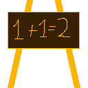

Well, so far my studies for GO for today. It's not over yet, so there will be more days in which I cannot fully work on the game because of these studies. Go is a completely unexplored language fo rme, but it does cover loads of things that will serve me pretty well. Future games of mine may call to external components written in Go, that much appears likely now.
18:45:59
GO
https://tour.golang.org/moretypes/1# << -- An important link to remember!
At least my Linux experiment with Go was succesful.... For now... as Linux is pretty infamous for letting the simplest of tasks go wrong... :-/
14:33:15
LINUX
I HATE this lack of standardization
13:27:16
PLAN
I plan to set up my updater to only put the realms that are finished in the release
13:26:40
PLAN
As soon as all Greece puzzles are complete, I plan to set up the demo version of Cynthia. From that moment on the itch.io version will also be completely open. However I'll only update the itch.io version daily and not the GJ version. The lack of a CLI tool is the reason for that for Game Jolt.
13:24:25
NOTE
Yeah, I know that hardly made sense, but not being able to test the game itself in it, does not mean I cannot test other things.
13:22:51
LINUX
Installing Ubuntu in my Virtual Box.... I cannot test this game in it, but it *will* allow me to run some tests
13:22:26
SITE
Added tag LINUX
11:50:34
GO
I'm doing a few studies here. It's unlikely they will influence this game, but it's not completely out of the question they might influence projects
11:49:29
SITE
Added tag GO
24 Nov 2017
12:35:36
BUG
The tutorial still came up... why?
12:35:28
TEST
Greeze Puzzle 2 Works
12:28:55
PUZZLE
Greece Pz 2 set up
12:10:03
TUTORIAL
If you didn't already have the pushing tutorial in Ireland you will now get it here in Greece. Also meaning that if you do the Greece levels before Ireland you won't get the pushing tutorial there any more if you already got it in Greece
12:09:19
PUZZLE
Greece puzzle 2 file created
11:59:23
ART
Greece Tiles
23 Nov 2017
23:17:45
BACKUP
Running
23:16:55
ITCH.IO
Updated
19:55:03
FIXED
Scripting issue, not an art issue... Phwew!
19:53:20
BUG
Some medusas not standing right
19:50:54
BUG
Beyond Any form of possibility
19:49:04
DEBUG
No music in Greece?
19:46:38
FIXED
Illegal Table Index
19:45:00
FIXED
Aha!
19:42:50
BUG
'nil'?
19:39:14
TEST
Does it work or doesn't it work?
19:37:54
FIXED
File misplacement
19:35:04
MUSIC
It appears no musician gets inspired by ancient Greece, so I had to dump a few tracks in..... Not my first choice, but by lack of anything better. :-/
19:18:44
DONE
Petrification
19:13:41
CONFIG
Start up script adapted for petrification
19:13:00
SCRIPT
Medusa should appear, however she cannot yet petrify you
17:56:22
STATUS
it's (almost) 6 o' clock and time for the news.
17:56:12
CONFIG
Medusa Data
17:49:53
NOTE
Some very pressing matters taking priority got in my way, though
14:52:12
NOTE
Some additional scripts will be required to make the medusas work, though
14:43:05
PUZZLE
Greece Puzzle 1
14:31:02
TUTORIAL
Medusa tutorial linked to the first puzzle in Greece
14:28:42
ART
Cave tiles... These will be used in the first Greece level... Some buildings will come later
Accidentally placed a lock on a place where a key should be.... silly!
20:24:55
PUZZLE
An empty puzzle has been created for Germany, which now only serves to keep the database in order
20:22:32
PLAN
Although I'll make the first puzzle in Germany unlockable, I'll first get onto Greece
20:21:34
PLAN
My plan is to make completing Ireland unlock Germany where the stories by the Grimm brothers will be the main theme.
20:20:39
NOTE
And this will also be the final puzzle in Ireland
20:20:20
PUZZLE
Ireland puzzle 5
20:06:02
ART
The pot of gold at the end on fthe rainbow
19:54:29
STUDY
19:17:45
FIXED
And that's been fixed now ;)
19:14:28
SOLVED
Code typo
19:13:49
DEBUG
<< nil >>?
19:12:23
DEBUG
This dedicated error must give me an answer
19:12:10
BUG
Pulling North works, but pulling to the west crashes the game... why?
19:08:59
FIXED
Walk references in pulling
19:06:02
FIXED
Illegal table read-out
19:04:38
ART
Fan art by MrMunchyGaming....
19:03:03
FIXED
Forgotten linkup
18:59:43
DONE
Pulling
17:51:05
YOUTUBE
16:10:55
CONFIG
"Reverse" values. The puller will need this.
15:58:59
PLAN
For pulling ( #48 ) basically the same routine will be followed as with pushing, only Cynthia herself has to move backward to make it all possible, and that makes a few more complexities come in
15:55:32
BACKUP
Anyway, I'm running an extra backup
15:55:12
OFFTOPIC
NOW I found a FNAF clone that triggered my interest: https://gamejolt.com/games/five-nigths-at-freddy-s-pacman-original/107058
West and East pushing works... North South, or at least South does not... Time to find out WHY!
15:32:58
SOLVED
The "nil" mystery has been solved
15:30:38
PLAN
I shall start recording again, when I'm working on something simple, like creating a new puzzle or something like that
15:30:00
STUPIDITY
Another recording down the drain.... I guess I should put this out of my head
15:27:58
NOTE
Vital value = nil.... HOW COME?
15:23:48
FIXED
Illegal function call -- Should have lead to a crash if other stuff worked the way it should
15:21:34
JUDGMENT
Progress, but not nearly anywhere far enough.... :-/
15:19:30
TEST
Let's try this
15:13:59
COCKROACH
This is getting reaaly odd!
15:12:04
FIXED
maybe I fixed something??? let's see
15:07:17
DEBUG
Hopefully this can provide me some data
15:02:30
BUG
That was totally NOT the effect I wanted to create
15:00:36
FIXED
I had to call the push feature :P
14:55:43
STUPIDITY
Ah I think I know why that is.... Silly
14:55:09
BUG
Yeah, all the work I just did has been ignored, peeps.... Cynthia had to push the tiles.... Hmmm...
14:52:12
NOTE
I'll start a new recording, but it will miss some vital parts... sorry
14:51:53
DONE
Disposed that
14:51:48
FAILURE
Stuff recorded that may never be recorded
14:30:03
TECHNO
Maybe that's interesting for the "nerds" among us :P
14:29:52
NOTE
Well I am recording this little session.
20 Nov 2017
22:55:50
DONE
I've set up http://tinyurl.com/gjtags -- Time was not yet on my side to work on the game. The earliest time I may be able to start to work will likely be Wednesday!
19 Nov 2017
12:58:03
NOTE
See ya later :P
12:55:30
BACKUP
Extra Backup
12:53:40
ITCH.IO
Updating
12:51:32
STATUS
Well that's it for now... From this point the code I am about to write is too complex to do within an hour and an hour is what I got at this moment
 new chapter for my book
new chapter for my book

 But it does work
But it does work